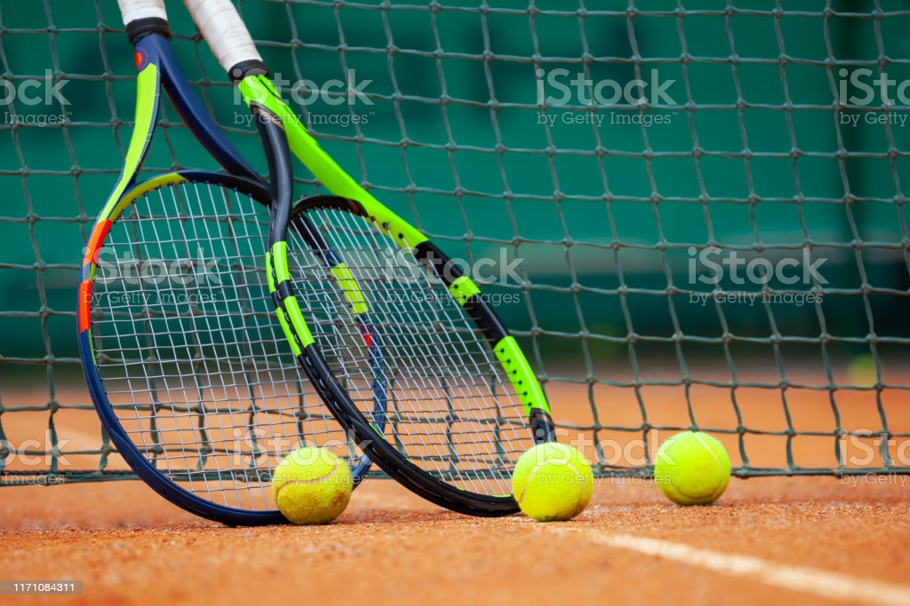

>

![]()
![]()
Tennis on kahden pelaajan (kaksinpeli) tai neljän pelaajan (nelinpeli) pelaama mailapeli. Pelissä pyritään lyömään mailalla palloa verkon yli toiselle kenttäpuolelle. Pisteen voittaa se pelaaja, joka saa pallon lyötyä viimeisenä vastustajan kenttäpuolelle.
Tennis kehitettiin Englannissa vuosina 1859-1865. Se oli alun perin suosittua etenkin yläluokan keskuudessa. Siitä tuli ensimmäisen kerran olympialaji vuosina 1896-1924 ja nousi uudestaan olympialajiksi vuonna 1988. Suomeen tennis tuli vuonna 1881 ja Suomen tennisliitto perustettiin 1911.
Tennismailan verkko on soikion muotoinen. Verkossa jänteet kulkevat ristikkäin. Verkon jänteet on pyrittävä pitämään mahdollisimman kireinä, jotta lyöminen olisi helpompaa.
Nykyisin käytetty tennispallo on tehty kumista ja päällystetty huovalla. Alun perin pallo oli valkoinen, mutta myöhemmin väri vaihdettiin keltaiseksi visuaalisista syistä.

Tenniskenttä on muodoltaan suorakulmioinen. Pelikenttä on 23,77m pitkä ja kaksinpelissä 8,23m leveä. Samalla kentällä voidaan pelata myös nelinpeliä, jossa kenttä on muutaman metrin leveämpi. Kentän keskellä on noin metrin korkuinen verkko, joka jakaa kentän kahteen osaan. Verkko on kiinnitetty poikkikentän kahdella verkkotolpalla. Molemmilla puolilla kenttää on kaksi syöttöruutua, joihin pallo syötetään takarajan takaa.
Tenniskentän alusta voi olla kolmea eri perustyyppiä: Kovaa, nurmea tai massaa. Kovapohjaisen kentän materiaali voi vaihdella suuresti aina betonista asfalttiin. Kenttätyypit eroavat suuresti toisistaan. Nurmikenttä on nopein alusta, jossa syötön ja kovien lyöntien merkitys korostuu. Massakenttä on hidas alusta, jolla menestymiseen vaaditaan erinomaista osaamista pelin kaikissa osa-alueissa. Massalla pidemmät ”pallorallit” ovat siis paljon yleisempiä, kuin nurmella tai kovalla alustalla, koska hitaammalla kentällä läpilyöntien tekeminen on paljon vaikeampaa.

US Openin kova-alustainen kenttä on sinisen värinen. (Pixabay.com)